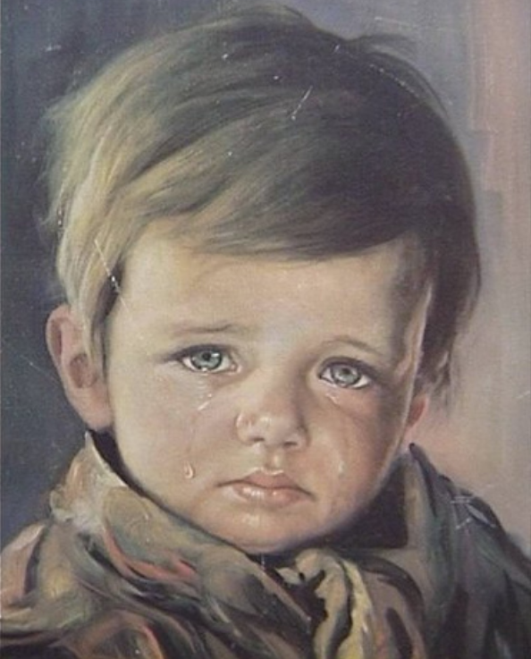

home
sign in
contact us
the Crying boy
(1950s)
Giovanni Bragolin

The Crying Boy is a mass-produced print of a painting by Italian
painter Giovanni Bragolin. This was the pen-name of the painter Bruno
Amarillo. It was widely distributed from the 1950s onwards.
There are numerous alternative versions, all portraits of tearful young
boys or girls. In addition to being widely known, certain urban legends attribute a
'curse' to the painting.
wikipedia
Read More
STAY CONNECTED
2020 © Sara Allahdan